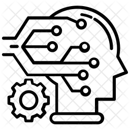
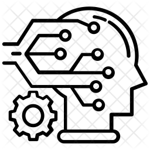
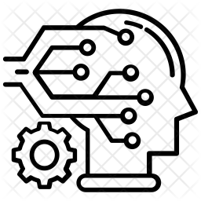

Let me tell you a little about myself and what I do...
I have always wondered how people managed to create such vast worlds inside a TV/computer screen, how they were able to make something out of nothing; how they were able to tell a computer what to do.
All of these video games made me want to follow the footsteps of the game developers. I, too, wanted to create something that would have a lasting impact on people
something that would trigger nostalgia, something that would serve as a temporary relief for people going through tough times, something that is worthwhile, something that makes people happy, something that would make me happy.
Combined with my passion for learning and Mathematics, the stage was set for me to begin my programming journey.
Great Learning - DataScience
IIT Bombay - Artificial Intelligence
CourseEra - Python
